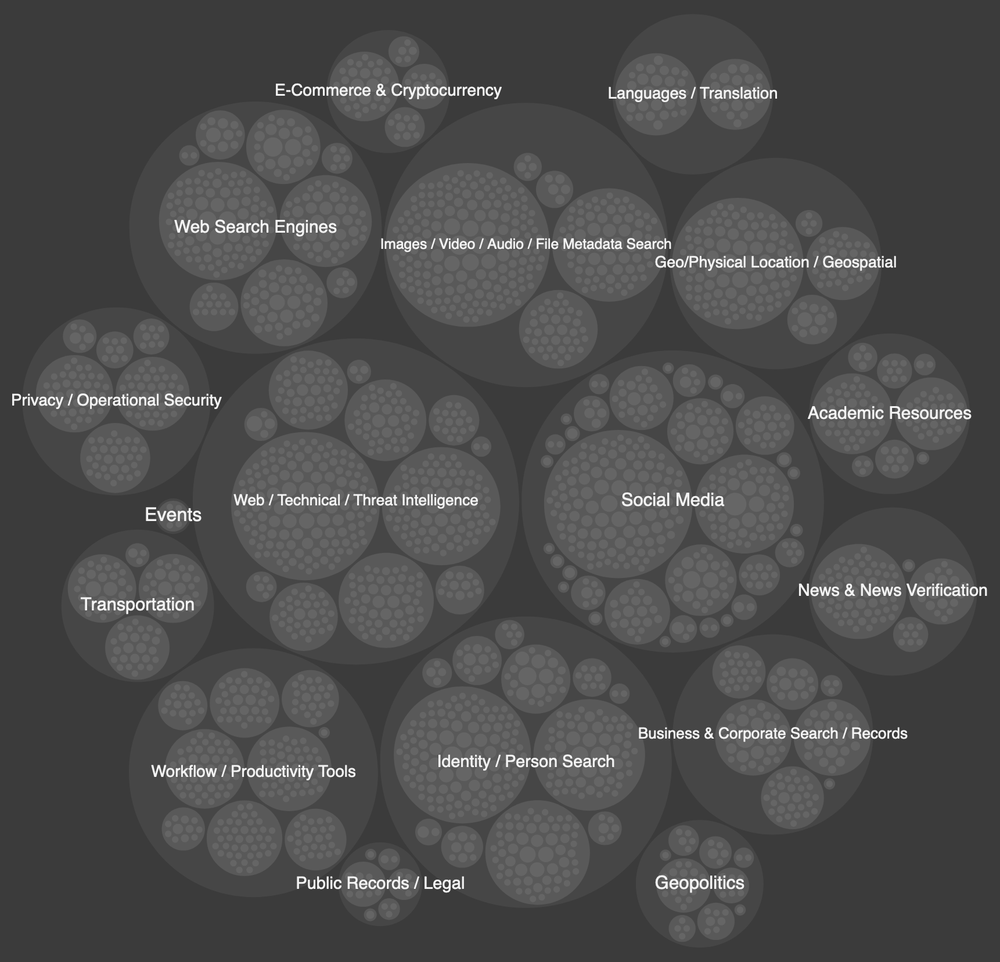
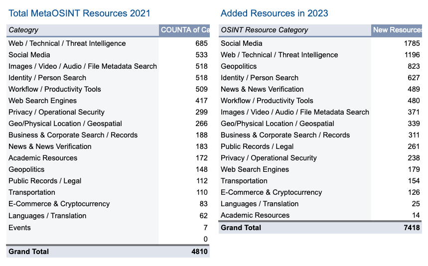
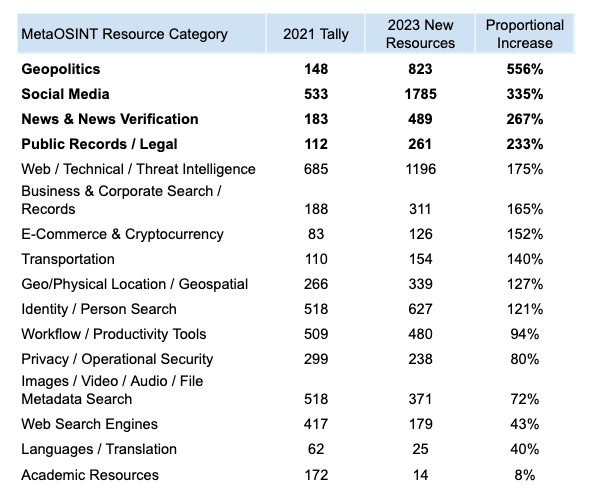
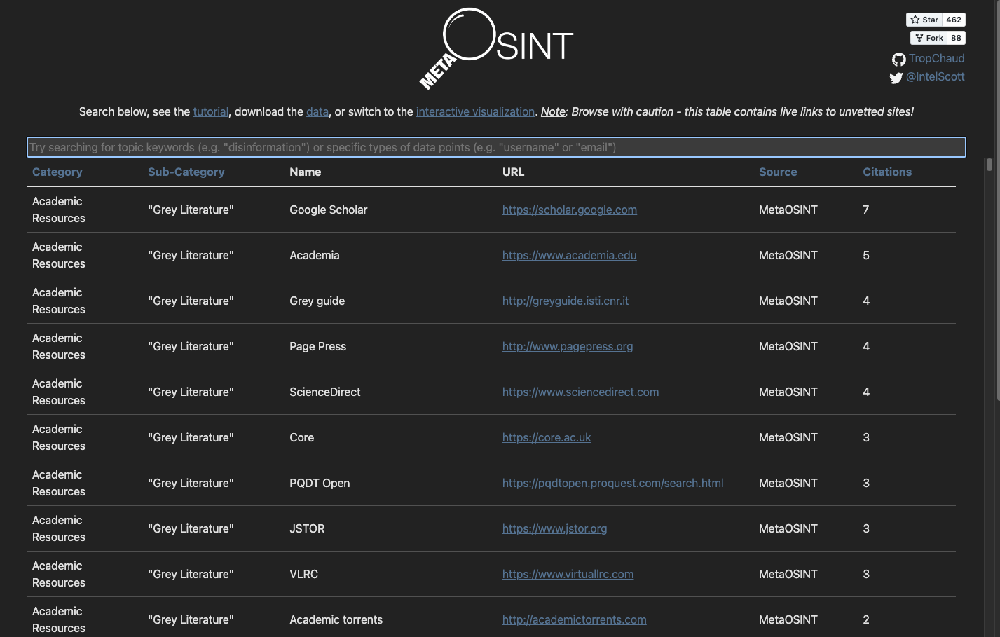
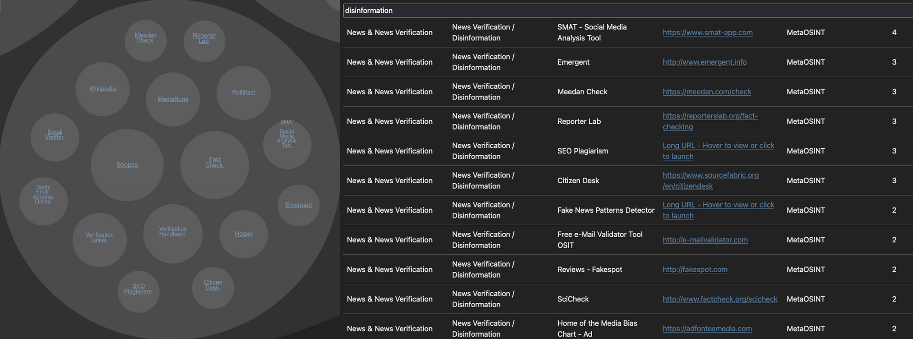

MetaOSINT recently received its largest update yet! Check out the chart or table to explore thousands of newly tracked OSINT tools & resources.
Published January 8, 2024 by TropChaud
In 2018, while conducting digital investigations in a former role, I started bookmarking lists of tools & resources useful for open-source intelligence (“OSINT”) research, including a surprising number of lists of lists. The collection grew, and after some (pretty painstaking) normalization efforts, I published the MetaOSINT dataset & web app in 2021.
MetaOSINT is first & foremost a tactical aide, designed to help jumpstart OSINT investigations. But after steadily gathering more tools & resources over nearly half a decade - a period that witnessed immense geopolitical, societal, and digital change & disruption - it seemed worthwhile to take a step back and survey how the dataset itself had changed, while considering what those changes might reflect about any broader trends.
This summary spotlights some of the most apparent changes I noticed in the makeup of the MetaOSINT dataset and quick takes on what those changes might suggest about the underlying landscape. It’s far from an academic assessment, but I haven’t seen a study quite like this conducted before - rooted in data points and at this scale, so I hope it adds value for more strategic-focused analysts and more tactical practitioners/investigators alike.
The number of tools & resources for conducting OSINT research - as measured by MetaOSINT - has grown considerably in recent years. In 2021, MetaOSINT tracked ~4,800 resources. ~1,000 were added in 2022, and the December 2023 update added a staggering 7,000 additional resources. These are certainly imperfect measures (especially considering that the inclusion methodology evolved since launch), but the data presented here suggest the landscape has almost certainly seen considerable growth in recent times.
There are now more OSINT tools than ever, useful for a wide variety of applications. If you are trying to find some bit of information online, there is a really good chance that some resource exists to help you. MetaOSINT is designed to help you surface that resource quickly - use the table if you have a pretty clear focus, or the chart to start more broadly.
An immense number of tools & resources exists to support OSINT research on social media platforms, and recent years stand out for the sheer number, depth, and variety that have been shared. With the addition of nearly 1,800 resources since 2021, Social Media is now the top MetaOSINT resource category.
The boom in tools for social media OSINT likely parallels continually growing social media use in general, but I find it valuable to observe the scale of overall and especially specific changes. Trendlines for specific platforms are likely influenced by a number of factors, including usage in general, more or less OSINT value from particular sources, and/or ease or challenges in retrieving relevant data from each platform.
Most platforms saw a dramatic increase in the number of available OSINT tools, including Twitter/X, which retained the top spot by a healthy margin, more than doubling an already sizable number [note: most resources referenced here were likely published before changes to Twitter’s API took effect in Spring 2023].* Image- & video-forward platforms like Instagram, Snapchat, TikTok, and Twitch saw immense increases in the number of OSINT-related resources, as well as chat & messaging platforms like Telegram, Discord, and WhatsApp and dating sites (COVID-19 pandemic quarantines probably further influenced many of these trends, including the latter 😉). Type the name of any of these platforms as a keyword into the search bar on the MetaOSINT table page to instantly surface the range of OSINT resources related to it.
*Reduced category tallies (e.g. VKontakte/Russian-speaking social media) were typically caused by either my own cleanup of the original data, or efforts to keep the collection from getting too unwieldy. For the small number of cases where resources were possibly “cut” from MetaOSINT, I feel the benefits of the far-deeper 2023 dataset greatly outweigh these limited potential downsides.
The Geopolitics segment of tools & resources grew the most - by far - of any category since MetaOSINT launched. A huge volume of resources around the Russia-Ukraine war were added, related to all aspects of the conflict - certainly open-source tracking of military and logistical movements & activities (evidenced especially with growth in ship and plane identification & tracking/traffic services), but also new information & people searches focused specifically on the region. Some approaches to surfacing these in the MetaOSINT table feature include:
Table search in action:
The boom in OSINT applications for conflict & crisis tracking doesn’t come without limitations and potential downsides, and this timely Reuters Institute piece summarizes several specific, critical considerations. It’s also well worth noting that the many resources recently added to MetaOSINT were compiled prior to the launch of the Israel-Hamas war in October 2023. Many dedicated OSINT resources surely now exist related to that conflict, and the trends covered here suggest that more will come around inevitable future conflicts as well.
The “News & News Verification” category saw the next-largest jump in tools & resources between 2021 and 2023. This trend is also not likely a surprise, especially to OSINT practitioners, but the scale of the increase seems notable - the number of verification/disinformation-related resources rose from 28 originally to 118 last year.
MetaOSINT highlights resources cited most often across a considerable number of input lists. Interestingly, the most-cited verification & disinformation resources (the larger bubbles in the image below) remained largely unchanged across the period - "old reliables" like snopes[.]com & factcheck[.]org. However, a large number of less-frequently-cited resources now also appear. Many of these are likely valuable, but there appears to be less “consensus” in citing many of these other resources. A good reminder that practitioners should always be diligent in validating the origins & mechanics of a particular resource...even if it is ostensibly a verification tool itself!
As many of the resources tracked in this project demonstrate, OSINT often represents an incredibly powerful information source. When used responsibly, OSINT tools & research techniques can drive significant public good - projects like Trace Labs (missing persons investigations), The Sentry (atrocities & corruption in Africa), and Citizen Evidence Lab (global human rights), represent just a few select examples.
The past few years of OSINT tool tracking yielded an incredible increase in sources related to government & politics, many of which focus on institutional accountability - especially accountability for police and other law enforcement & government officials. In 2021, there were just 14 resources in the “Government & Politics” MetaOSINT sub-category, which mainly focused on national statistics or other factual details. The 2023 update added over 200 more, including numerous projects documenting public evidence of violence, misconduct, and/or complaints involving law enforcement personnel.
Documentation on its own - without corresponding policy, procedural, & behavior modifications - won’t drive material change. But as official sources fail to capture the full scope of imperative issues like police violence and gun violence (the Mapping Police Violence project was a resource newly added to MetaOSINT in December 2023), the power of OSINT is primed to help fill critical information gaps as one step on the path towards long-overdue progress.
And here are a few final observations on the evolution of the MetaOSINT dataset:
I’m certain there are many more insights to be gleaned from analyzing the MetaOSINT collection (remember, all the underlying data is available on GitHub)...so dig in, and be sure to let me know what you find!